| 필요한 것 | 설치 방법 |
|---|---|
| Windows 10 (2004 이상) / 11, 64비트 | — |
| .NET 9 데스크톱 런타임 | 없으면 첫 실행 때 안내 창이 뜹니다 → [다운로드] 눌러 설치 |
| ffmpeg (인코더) | 명령 프롬프트에서 winget install Gyan.FFmpeg 또는 ffmpeg.exe를 MxCam.exe와 같은 폴더에 두기 |
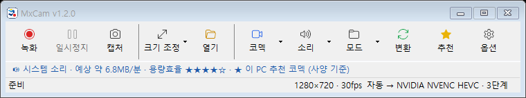
1 2 3 4 5 6 7 8 9 10 11 A B| 번호 | 버튼 | 하는 일 |
|---|---|---|
| 1 | 녹화 F2 | 녹화 시작 / 중지. 녹화 중에는 [중지]로 바뀝니다. |
| 2 | 일시정지 F3 | 잠시 멈춤 / 재개. 멈춘 부분은 빠지고 한 파일로 이어집니다. |
| 3 | 캡처 F11 | 녹화 영역을 사진(PNG)으로 저장. 녹화 중에도 됩니다. |
| 4 | 크기 조정 | 전체 화면, 창 선택, 정해진 크기(1280×720 등), 사용자 지정 크기 |
| 5 | 열기 | 저장 폴더 열기 (기본: 내 비디오\MxCam) |
| 6 | 코덱 | 저장 형식 선택. 자동(추천)이 기본 — 5장 참고 |
| 7 | 소리 | 시스템 소리 / 마이크 / 소리 없음 |
| 8 | 모드 | 화면 녹화 · 소리만 녹음 · GIF 움짤 |
| 9 | 변환 | 가지고 있는 동영상을 작은 용량으로 변환 — 8장 |
| 10 | 추천 | 내 PC에 가장 효율 좋은 코덱 실측 · 학습 현황 — 6·7장 |
| 11 | 옵션 | FPS, 단축키, 워터마크, 자가 학습 켜기/끄기 등 — 10장 |
| A | 안내 줄 | 소리 상태 · 예상 용량(MB/분) · 💡 더 좋은 코덱 추천. 누르면 추천 창이 열립니다. |
| B | 상태 줄 | 녹화 시간 · 파일 크기 · 해상도 · 사용 코덱. 저장 후 파일 이름을 누르면 폴더가 열립니다. |
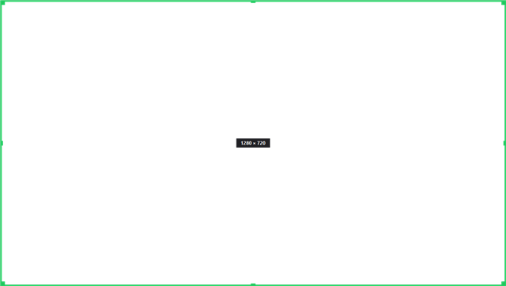
모서리·변 = 크기 조절 / 가운데 = 이동
| ■ 초록 | 대기 (영역 조절 가능) |
| ■ 빨강 | 녹화 중 (영역 고정) |
| ■ 주황 | 일시정지 |
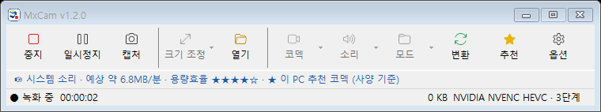
녹화 시간과 파일 크기가 실시간으로 표시됩니다
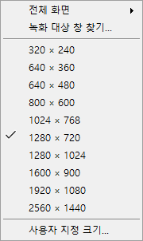
녹화 대상 창 찾기 — 화면이 어두워지면 녹화할 창을 클릭하세요. 그 창 크기에 딱 맞춰집니다. (Esc 취소)
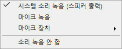
시스템 소리 = 스피커로 나오는 소리 (유튜브·게임 등)
마이크 = 내 목소리. 둘 다 켜면 섞어서 녹음합니다.
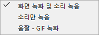
소리만 녹음 — MP3·WMA·AAC·FLAC·WAV
GIF — 짧은 움짤 (품질 단계에 따라 크기·FPS 자동)
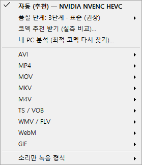
코덱 메뉴
잘 모르겠으면 그냥 "자동 (추천)"을 쓰세요.
내 PC에서 같은 화질일 때 용량이 가장 작은 코덱을 자동으로 고르고, 품질값까지 맞춥니다. (예: NVIDIA 그래픽카드 → NVENC HEVC)
| 품질 단계 | 이럴 때 |
|---|---|
| 1 · 최소 용량 | 오래 녹화, 저장공간 부족 |
| 2 · 작은 용량 | 강의·회의 녹화 |
| 3 · 표준 (권장) | 대부분의 경우 |
| 4 · 고화질 | 게임, 작은 글씨 |
| 5 · 최고 화질 | 편집용 원본 |
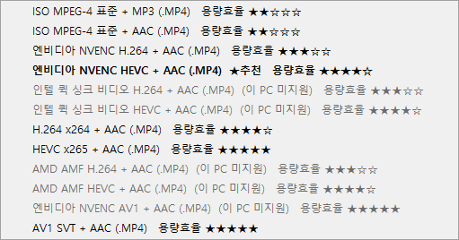
각 항목 옆 용량효율 ★이 많을수록 같은 화질에서 파일이 작습니다. ★추천 표시가 내 PC의 최적 코덱이고, 이 PC에서 쓸 수 없는 코덱은 회색으로 표시됩니다.
녹화만 하면 됩니다. MxCam이 내 화면에 가장 맞는 코덱과 품질값을 스스로 배웁니다.
해상도·프레임 대역별(예: 1080p 30fps)로 따로 학습합니다.
| ① | 자가 학습 결과 (녹화할수록 정확) |
| ② | 실측 테스트 결과 (7장) |
| ③ | 그래픽카드 등 사양 기준 |
[추천] 창 위쪽에 "🧠 녹화 자가 학습 N회 기준", 표의 학습 용량비 열에 코덱별 성적(원본 대비 %)이 나옵니다.
| 끄기 | [옵션] → "코덱 자가 학습" 체크 해제. 학습도, 학습 결과 사용도 멈춥니다. |
| 초기화 | [추천] → [학습 초기화] |
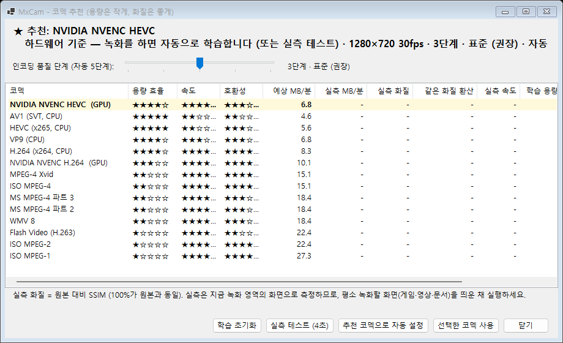
[추천] 버튼 → 코덱 추천 창
| 열 | 뜻 |
|---|---|
| 실측 화질 | 원본과 얼마나 같은지 (100% = 원본과 동일, 97% 이상이면 눈으로 구분 어려움) |
| 같은 화질 환산 | 모든 코덱을 같은 화질로 맞췄을 때의 용량 — 이 값이 가장 작은 코덱이 추천됩니다 |
| 실측 속도 | 실시간 대비 인코딩 속도 (x1.25 이상이어야 끊김 없이 녹화) |
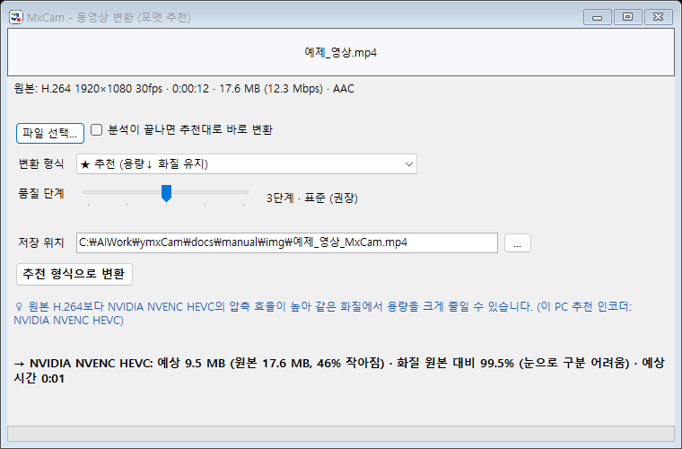
[변환] 버튼 → 동영상을 끌어다 놓거나 [파일 선택]
원본은 절대 지우거나 덮어쓰지 않습니다. 결과는 같은 폴더에 원본이름_MxCam.mp4로 저장됩니다.
| 변환 형식 | 언제 |
|---|---|
| ★ 추천 (용량↓ 화질 유지) | 대부분 — 이 PC의 최적 코덱으로 |
| 호환성 최우선 (H.264) | 오래된 TV·폰에서도 재생해야 할 때 |
| 웹·메신저 공유용 (720p) | 카톡·메일로 보낼 때 |
| 고효율 HEVC / 최소 용량 AV1 | 보관용으로 최대한 작게 |
| MP4로 포장만 변경 | MKV 등을 화질 손실 없이 MP4로 (몇 초 만에 끝) |
| 움짤 GIF / 소리만 MP3 | 앞 10초 움짤, 음악 추출 |
동영상 파일을 우클릭 → MxCam: 용량 최적화 변환 — 끝. 나머지는 알아서 합니다.
| 예시 (1080p 10초) | 1회차 | 2회차 |
|---|---|---|
| 시험 횟수 | 16회 | 5회 |
| 걸린 시간 | 30초 | 10초 |
| 결과 용량 | 17.3 MB → 2.0 MB (화질 98%) | |
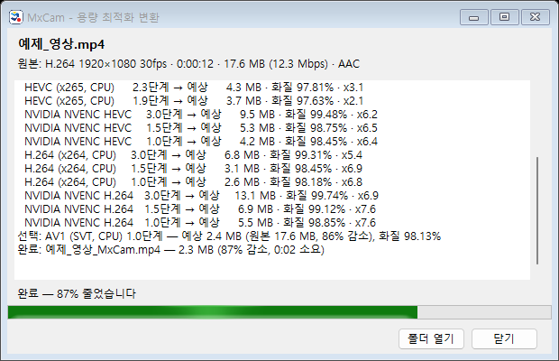
최적화 창 — 시험한 후보와 결과가 모두 표시됩니다
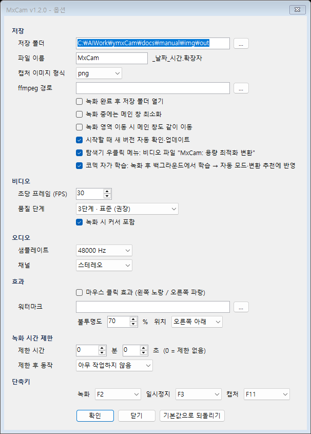
| 항목 | 설명 (기본값) |
|---|---|
| 저장 폴더 · 파일 이름 | 저장 위치와 접두어 (내 비디오\MxCam, MxCam_날짜_시간) |
| 캡처 이미지 형식 | PNG / JPG / BMP (PNG) |
| 녹화 중 최소화 | 녹화하면 MxCam 창을 숨김 (끔) |
| 자동 업데이트 | 시작할 때 새 버전 확인·설치 (켬) |
| 우클릭 메뉴 | 비디오 파일 우클릭 메뉴 (켬) |
| 코덱 자가 학습 | 녹화 후 학습 → 자동 모드·변환 추천에 반영 (켬) — 6장 |
| FPS | 초당 프레임 1~60 (30) |
| 품질 단계 | 1~5단계 (3 · 표준) |
| 커서 포함 | 마우스 커서도 녹화 (켬) |
| 샘플레이트 · 채널 | 48000 Hz · 스테레오 |
| 마우스 클릭 효과 | 클릭할 때 노랑/파랑 원 (끔) |
| 워터마크 | PNG 로고를 영상 모서리에 (불투명도·위치) |
| 녹화 시간 제한 | N분 N초 뒤 자동 중지 → 아무것도 안 함 / 새 녹화 / 프로그램 종료 / 시스템 종료 |
| 단축키 | 녹화 F2 · 일시정지 F3 · 캡처 F11 |
[기본값으로 되돌리기]를 누르면 위의 기본값으로 돌아갑니다.
| 증상 | 해결 |
|---|---|
| 단축키(F2 등)가 안 됨 | 다른 녹화 프로그램(oCam, 반디캠 등)이 같은 키를 쓰고 있습니다. 그 프로그램을 트레이에서 종료하거나, MxCam 옵션에서 단축키를 바꾸세요. 상태 줄에 "단축키 등록 실패"가 표시됩니다. |
| "ffmpeg를 찾을 수 없음" | winget install Gyan.FFmpeg 실행 후 MxCam 재시작. 또는 옵션 → ffmpeg 경로 지정. |
| 소리가 녹음 안 됨 | [소리] 메뉴에서 시스템 소리/마이크가 켜져 있는지 확인. 마이크는 [마이크 장치]에서 장치 선택. |
| 영상이 끊김 | FPS를 낮추거나(30), 녹화 영역을 줄이거나, [추천]에서 GPU 코덱(NVENC/QSV/AMF) 사용. |
| 용량이 너무 큼 | 코덱을 "자동 (추천)"으로, 품질 단계를 2~3으로. 이미 녹화한 파일은 우클릭 → 용량 최적화. |
| 우클릭 메뉴가 안 보임 | Windows 11: "추가 옵션 표시" 안을 보세요. 옵션의 우클릭 메뉴가 켜져 있는지 확인 후 MxCam을 한 번 실행. |
| 재생이 안 되는 파일 | HEVC/AV1은 일부 오래된 플레이어에서 안 열릴 수 있습니다. 변환 → "호환성 최우선 (H.264)". |
MxCam · https://github.com/MrDH1004/MxCam · 문의/버그: GitHub Issues